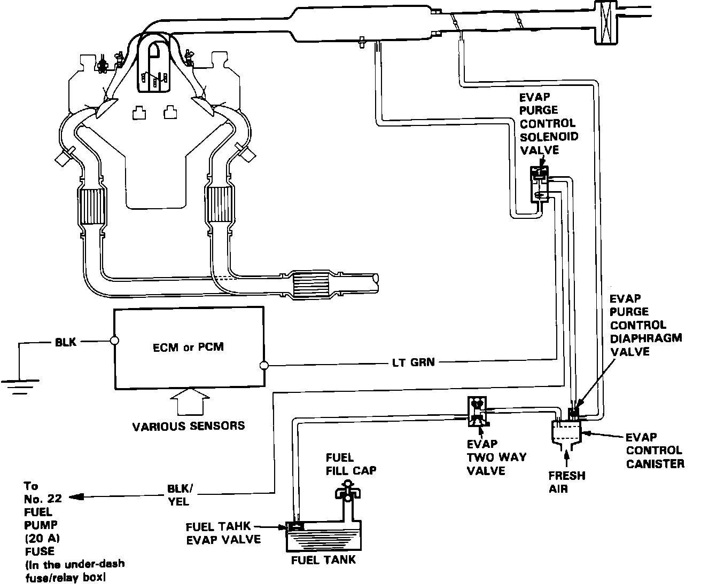

Evaporative Emissions System: Description and Operation
Schematic View Evaporative Emission Controls:

PURPOSE
The evaporative control system prevents the escape of fuel vapors from the fuel tank and fuel injection into the atmosphere.
BASIC OPERATION
Vapors generated in the fuel tank enter the charcoal canister where the charcoal absorbs and stores the fuel vapor.
When the ECM senses the correct conditions for operation, it cuts the ground circuit to the solenoid. This opens the solenoid, allowing manifold vacuum to be applied to the carbon canister, allowing fresh air to be drawn into the bottom of the canister.
The vapors then pass through the solenoid valve into the intake manifold to be consumed in the combustion process.
OPERATING CONDITIONS
The canister is purged (solenoid valve off) under the following condition:
Engine temperature above 158° F (70° C).
Engine RPM above 2000.